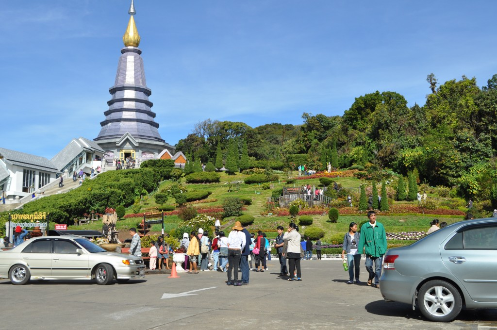

จังหวัดเชียงใหม่
คำขวัญประจำจังหวัด
ดอยสุเทพเป็นศรี ประเพณีเป็นสง่า บุปผาชาติล้วนงามตา นามล้ำค่านครพิงค์
เชียงใหม่ นพบุรีศรีนครพิงค์เชียงใหม่ หรือเวียงพิงค์ ก่อตั้งโดยพญามังรายมหาราชปฐมกษัตริย์แห่งราชวงศ์มังรายเมื่อพ.ศ. 1839 ราชวงศ์นี้ได้ปกครองต่อมาอีก
200 ปี เมืองนี้จึงตกเป็นเมืองขึ้นของพม่าในปีพ.ศ. 2101 ต่อมาในปีพ.ศ. 2317 พระเจ้าตากสินมหาราชมาขับไล่พม่าจนพ่ายแพ้ไป เชียงใหม่จึงรวมเข้าในอาณาจักรสยามนับแต่นั้นมา
ต่อมาในสมัยพระพุทธยอดฟ้าจุฬาโลกเชียงใหม่มีฐานะเป็นเมืองประเทศราช และเมื่อมีการปรับปรุงการปกครองส่วนภูมิภาค ในสมัยพระบาทสมเด็จพระจุลจอมเกล้าเจ้าอยู่หัวเชียงใหม่เปลี่ยนฐานะเป็นมณฑลพา
ยัพ และเป็นจังหวัดในสมัยพระบาทสมเด็จพระปกเกล้าเจ้าอยู่หัว ปัจจุบันเชียงใหม่นับเป็นเมืองใหญ่และสำคัญที่สุดของภาคเหนือ
และในขณะเดียวกันก็ยังเป็นเมืองที่รวบรวมศิลปกรรม โบราณวัตถุ ตลอดจนวัฒนธรรมดั้งเดิมของล้านนาไทยเอาไว้ โดยทั่วไปแล้วพื้นที่จังหวัดเชียงใหม่ส่วนใหญ่เป็นป่าละเมาะและภูเขา
มีที่ราบอยู่ตอนกลางตามสองฟากฝั่งแม่น้ำปิง
ดอยอินทนนท์
ถ้าจะพูดถึงสถานที่ที่นักเดินทาง ทั้งมืออาชีพและมือสมัครเล่น อยากจะไปสัมผัสให้ได้สักครั้งหนึ่งในชีวิต ชื่อของ อุทยานแห่งชาติดอยอินทนนท์ หรือ ดอยอินทนนท์ ก็น่าจะอยู่ในลิสต์อัน
ดับต้น ๆ เพราะไม่ว่าจะรักการเที่ยวแบบชิลล์ ๆ หรือลุย ๆ สถานที่ท่องเที่ยวยอดฮิตแห่งนี้ ก็พร้อมต้อนรับด้วยความงดงามของธรรมชาติอย่างแท้จริง
ไม่ว่าจะเป็นความอุดมสมบูรณ์ของ ป่าใหญ่ดึกดำบรรพ์ (Old growth forest) สภาพอากาศที่หนาวเย็นและชุ่มฉ่ำตลอดทั้งปี ทำให้มีมอส
เฟิร์นและพืชอิงอาศัย (epiphyte) ชนิดอื่น ๆ ขึ้นปกคลุมตามลำต้นอย่างหนาแน่น ใครที่เดินทางมาเที่ยวจะต้องประทับใจกับสีสันของใบไม้ป่าผลัดใบ
ที่กำลังจะผลัดใบในช่วงปลายปี ส่วนต้นปี ดอกไม้นานาชนิดก็บานสะพรั่งอดไม่ได้ที่จะกดชัตเตอร์ฝากภาพสวย ๆ ฝากเพื่อน หรือจะเลือกชมความโล่งของป่าทุ่งหญ้าหรือไร่ร้าง
หน้าผาอันสูงชัน ทำให้มองเห็นสภาพภูมิประเทศได้กว้างไกล เป็นแหล่งที่อยู่ที่สำคัญของกวางผาและนกชนิดต่าง ๆ ก็สนุกไม่แพ้กัน

วัดพระธาตุดอยสุเทพราชวรวิหาร
หากใครที่มีโอกาสมาเยือนจังหวัดเชียงใหม่แล้วไม่ได้กินข้าวซอย ไม่ได้ขึ้นดอยสุเทพ ก็คงตรงกับคำเปรียบเปรยที่มาว่ามาไม่ถึงอย่างไรอย่างนั้น
ทว่าก่อนหน้านี้เราก็เคยแนะนำร้านข้าวซอยรสชาติเด็ดดวงกันมาบ้างแล้ว ถึงคราวนี้ก็เป็นคิวของวัดเก่าแก่คู่บ้านคู่เมืองซึ่งมากด้วยความงดงามในแบบล้านนาอย่าง
วัดพระธาตุดอยสุเทพราชวรวิหาร ศาสน สถานที่มีความสำคัญเรื่อยมาตั้งแต่ครั้งอาณาจักรล้านนาจวบจนกระทั่งปัจจุบัน ด้วยระยะทางเพียง10
กิโลเมตรจากตัวเมืองเชียงใหม่ กับเส้นทางอันคดเคี้ยวที่ไต่ระดับความสูงขึ้นไปเรื่อยๆ จนมาหยุดอยู่ที่ระดับ 1,053 เมตรเหนือระดับน้ำทะเล
และตอนนี้ก็ได้เวลาเตรียมกายสำรวมใจพร้อมเข้าไปนมัสการสิ่งศักดิ์สิทธิ์ด้าน ในกันแล้ว
ข้อมูลติดต่อ
ททท. สำนักงานเชียงใหม่
พื้นที่รับผิดชอบ: เชียงใหม่
105/1 ถ.เชียงใหม่ – ลำพูน ต.วัดเกตุ อ.เมือง จ.เชียงใหม่ 50000
โทรศัพท์. 053 248 604-5
ข้อมูลผู้จัดทำ
นายพิชยะเศรษฐ์ โรจน์พงษ์ รหัสประจำตัว 5696001428